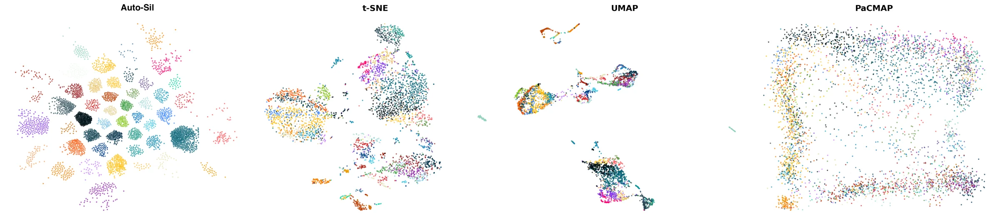
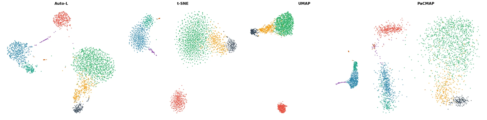
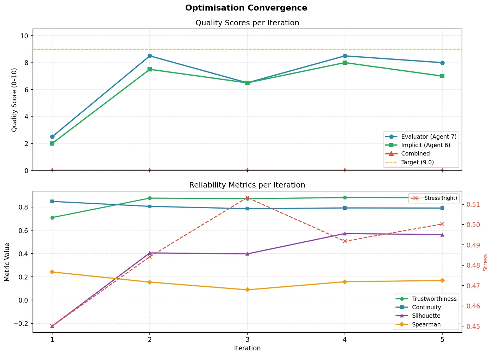
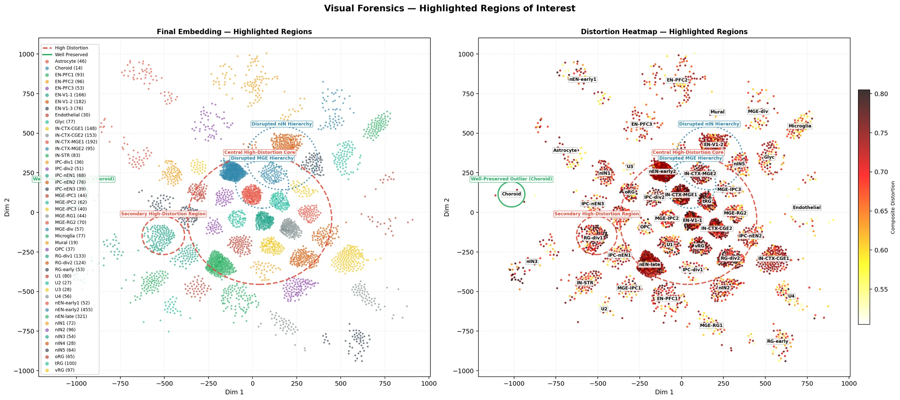

AutoManifold
Agentic Design of Data Visualisation Algorithms via Manifold Embedding
Say what your plot should preserve: tight clusters, global distances or local neighbourhoods. A team of LLM agents then designs, implements and tunes a new embedding algorithm for your data that does it.
Every embedding method ships with a fixed trade-off
t-SNE, UMAP and PaCMAP dominate data visualisation. Each one decides at design time how much to favour local neighbourhoods over global layout and cluster separation. Hyperparameters only move you a little within that choice.
Designing a new algorithm for a different priority takes specialist knowledge and a lot of trial and error. And asking an LLM to just write one is unreliable: generated code tends to have numerical bugs, miscalibrated objectives and silent failures, and it drifts toward whatever the model saw in training rather than what you asked for.
- t-SNE
Matches neighbour similarity distributions. Strong local detail; distances between clusters carry little meaning.
- UMAP
Aligns fuzzy topological graphs. Faster and somewhat more global, still built for local fidelity.
- PaCMAP
Adds mid-near and far pairs to balance local and global structure, with one fixed balance.
- AutoManifold
Builds a new algorithm per dataset and per priority, from parts whose behaviour is known.
A unified framework the agents fill in
The paper breaks embedding design into the components that govern quality and writes each one as a template. Engines implement the fixed parts. Agents design the parts marked below, conditioned on the data and on your priority.
Designed by agents Everything else is fixed, deterministic code
Embedding difficulty
Cluster the data into patches, embed each with t-SNE and UMAP, score them, and label every point hard, moderate or easy. Later components adapt to this label.
Adaptive affinity ensemble
Several neighbourhood graphs (distance measure × neighbourhood rule) are mixed with weights that can change from point to point, depending on local geometry, difficulty and global data traits.
Constrained multi-objective cost
A primary local objective is minimised while global objectives are held under thresholds, or everything is combined as a weighted sum or a Pareto problem. The agents choose the form and the weights.
Configuration and refinement
An initial configuration is guessed from data characteristics, then hyperparameters are refined in a loop that reads the reliability scores of each embedding.
Agents may combine primitives freely but cannot invent new numerical kernels. The paper calls the result compositional novelty: new algorithms built from new combinations of known, numerically safe parts.
Twelve agents, six phases, one planner
Agents propose. Engines measure.
Every LLM output is checked by deterministic code before it counts. A planner runs the workflow, worker agents each own one narrow task with a fixed JSON output, and compute engines produce the embeddings and scores. Select a phase to see who does what.
Baseline analysis
- Engines
- The DR-Visualisation engine runs t-SNE, UMAP and PaCMAP; the Quantitative Analyst engine scores them on all six reliability metrics.
- Hands on
- The best baseline and the metric targets for the refinement loop. The synthesiser later sees these so it knows what it has to beat.
Data characterisation
- Agent 1, data characterisation
- Designs the data-characteristic function g (geometry, density, cluster imbalance) and uses it to pick an initial configuration.
- Also decides
- Pre-processing, for example a PCA step to an intermediate dimension before embedding.
Structure analysis
- Agent 2, embedding difficulty
- Designs the difficulty function that labels each point hard, moderate or easy to embed.
- Agent 3, neighbourhood analysis
- Estimates how large a neighbourhood can be embedded almost isometrically, which informs neighbourhood sizes downstream.
Algorithm design
- Agent 4, affinity graph designer
- Chooses which affinity primitives to combine and how to weight them, either as constants or as adaptive per-point functions.
- Agent 5, cost function composer
- Picks the objectives, which are primary and which are constraints, and their weights. The planner then selects a solver for the composed problem.
Algorithm synthesis
- Agent 8, synthesiser
- Writes the executable algorithm from the design, reusing verified code for the fixed parts.
- Agent 10, error recovery
- Repairs code that fails to run, in a separate loop.
- Agent 12, novelty validator
- Compares the result with the maths of t-SNE, UMAP, PaCMAP, LargeVis, Spectral Embedding and ForceAtlas2, names the closest method and explains what is different.
Refinement, analysis and output
- Agent 6, hyperparameter optimisation
- Iteratively refines the new algorithm's hyperparameters from its reliability scores.
- Agent 7, visualisation evaluator
- Grades each iteration against the metrics you prioritised.
- Agent 11, maths and pseudocode
- Writes the formal formulation and step-by-step pseudocode of the final algorithm.
- Agent 9, visual forensics
- Inspects the final plot, marking distorted, well-preserved and hierarchy-breaking regions.
Ask for cluster separation, get cluster separation
On cortex development data, the three baselines score above 0.9 on local fidelity yet squash cell types into overlapping ribbons. Asked to prioritise silhouette, AutoManifold designed a new affinity graph and objective that pull cells of the same type into compact, clearly separate groups.


Steering works best on global structure
For each of the six reliability scores, AutoManifold designed a separate algorithm targeting it. A filled dot means the generated algorithm beat the best of tuned t-SNE, UMAP and PaCMAP on its own target.
Spearman correlation and silhouette are won on all six datasets, stress on five. Local metrics are harder to beat because the primitives can already reproduce strong baselines there, a limitation the paper discusses openly.
Full results by dataset
More than hyperparameter tuning
On PBMC3k, every approach was asked to optimise one global score at a time: a 50-trial random search over t-SNE, a single LLM prompt (SingleLLM), a skeleton-free multi-agent system (NoSkel-Agents) and AutoManifold. Tuning t-SNE barely moves the global scores, and the two less structured LLM setups are less reliable on the scores they were not targeting.
Bold marks the best value in each priority block. Values from Table 2 of the paper.
What one run looks like
The refinement loop logs agent grades and all reliability scores per iteration, and the forensics agent annotates the final plot so you can see where it can be trusted.


Run it on your own data
The repository includes a web UI for every pipeline mode and a command-line tool. Use a built-in dataset or upload a CSV, pick an LLM provider and say what to optimise.
Works with OpenAI, Anthropic, Google Gemini and DeepSeek. Python 3.10 or newer. The test suite uses mocked LLM clients, so it runs without API keys.
git clone https://github.com/buraksusam/AutoManifold_NeurIPS2026.git cd AutoManifold_NeurIPS2026 python -m venv .venv && source .venv/bin/activate pip install -r requirements.txt cp .env.example .env # add your LLM API key python serve.py --open # web UI at http://localhost:8000
- AutoManifold
automanifoldThe full method: specialised agents analyse the data, design affinity and cost from the primitive library, then synthesise, validate and refine a new algorithm.
- NoSkel-Agents
noskel_agentsAblation without the framework skeleton. A designer agent starts from a blank canvas and spawns analysis sub-agents on demand.
- Auto-Skills
auto_skillsOne autonomous agent drives the design by calling skills and deterministic compute tools.
- SingleLLM
singlellmBaseline: one prompt produces the whole algorithm, with no agents and no data context.
- Optimization
optimizationTunes an existing method (t-SNE, UMAP, PaCMAP or PCA) with LLM-guided iterative refinement.
Cite
@inproceedings{automanifold2026,
title = {AutoManifold: Agentic Design of Data Visualisation
Algorithms via Manifold Embedding},
author = {Susam, Burak and Kang, Ruiyuan and Mu, Tingting},
booktitle = {Advances in Neural Information Processing Systems},
year = {2026}
}
The hyperparameter refinement loop builds on Explainable Iterative Data Visualisation Refinement via an LLM Agent (Susam and Mu, IEEE CG&A 2026).